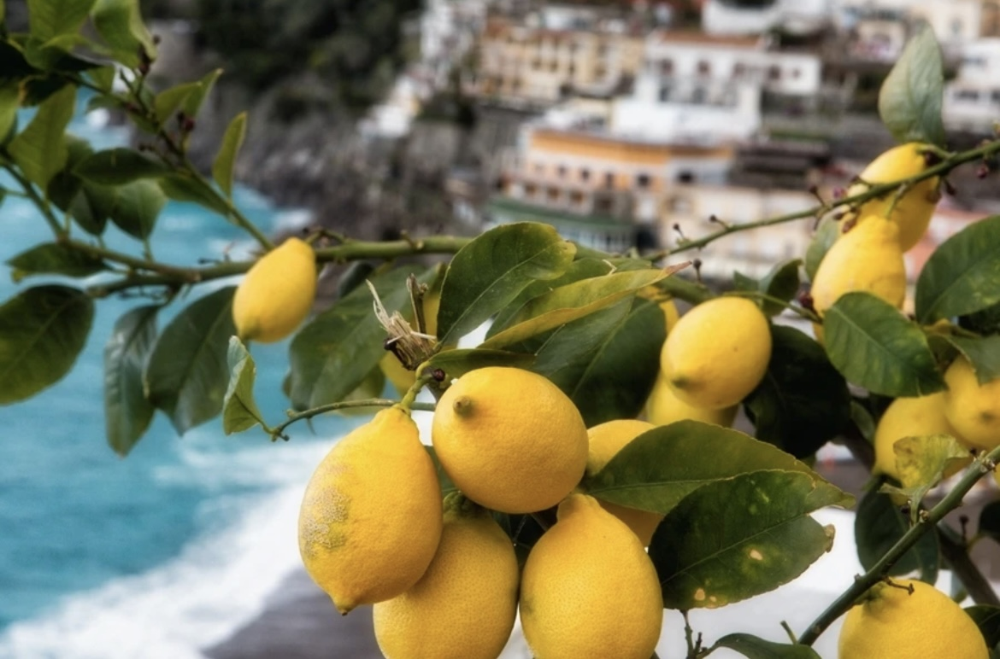
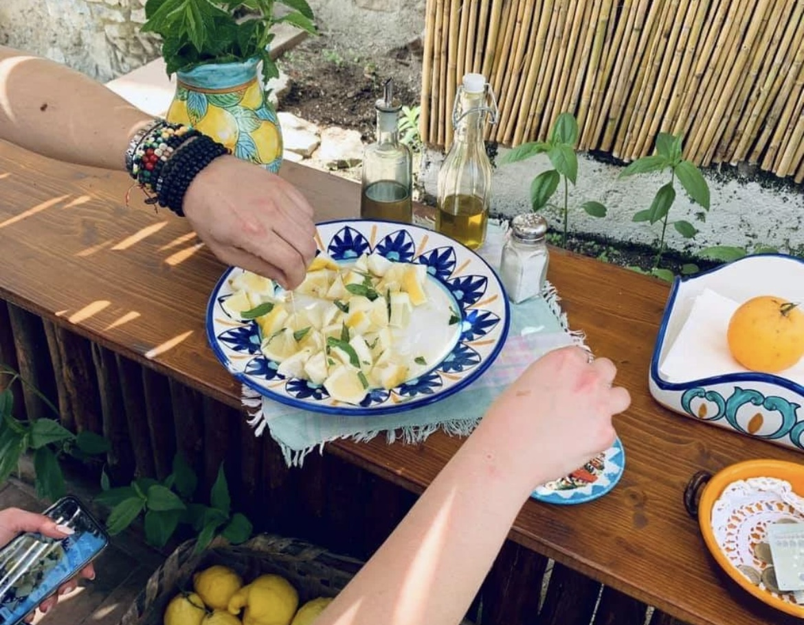
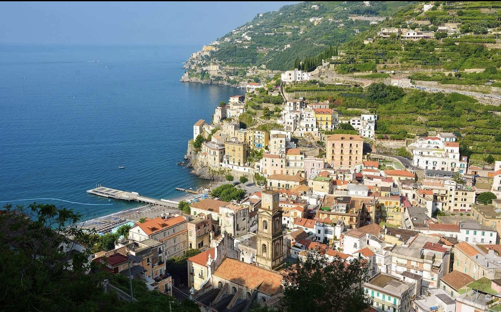
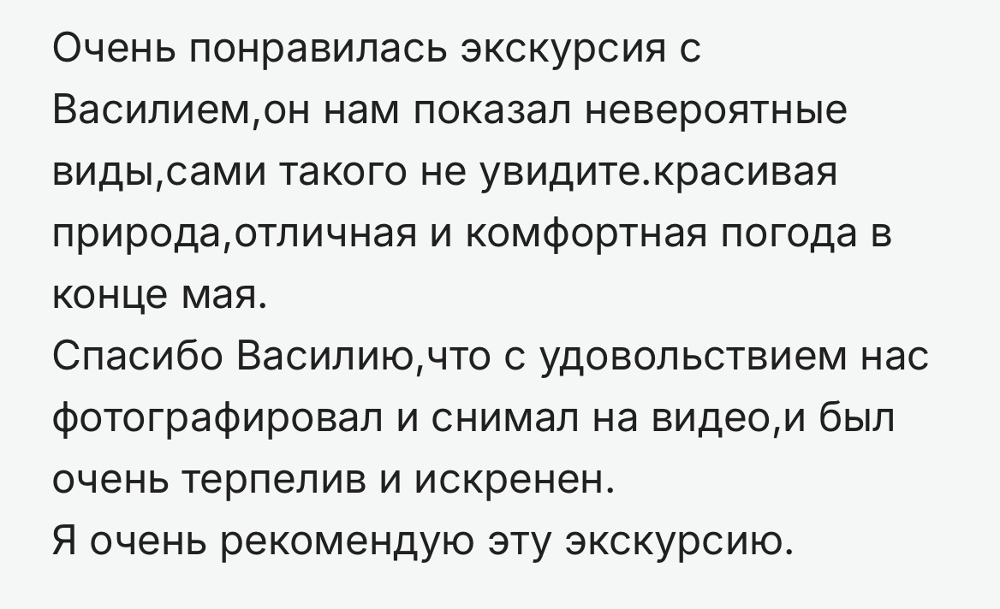
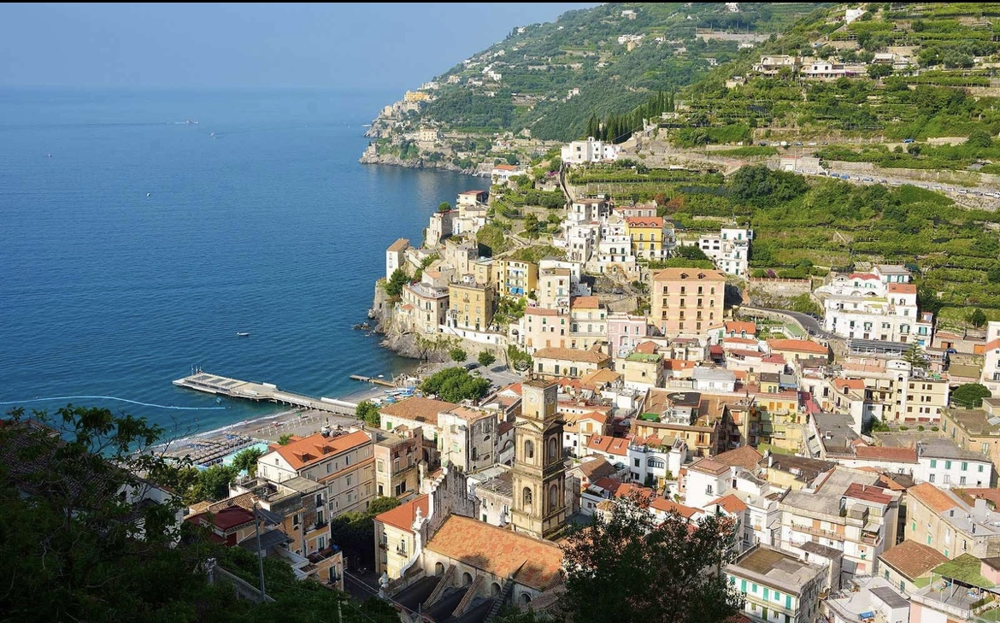
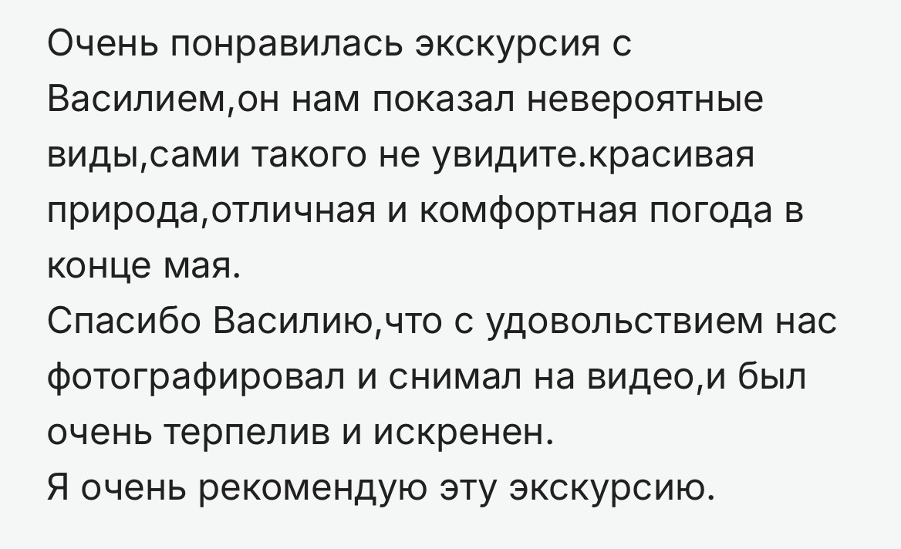
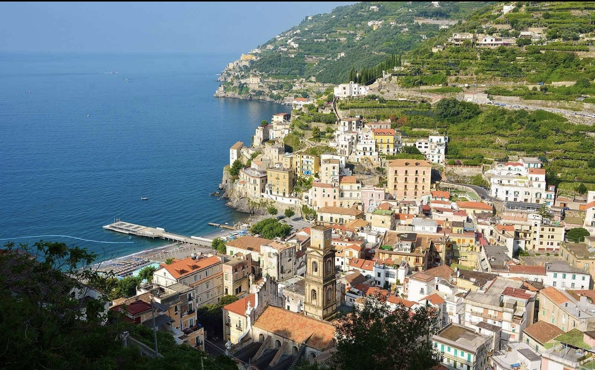
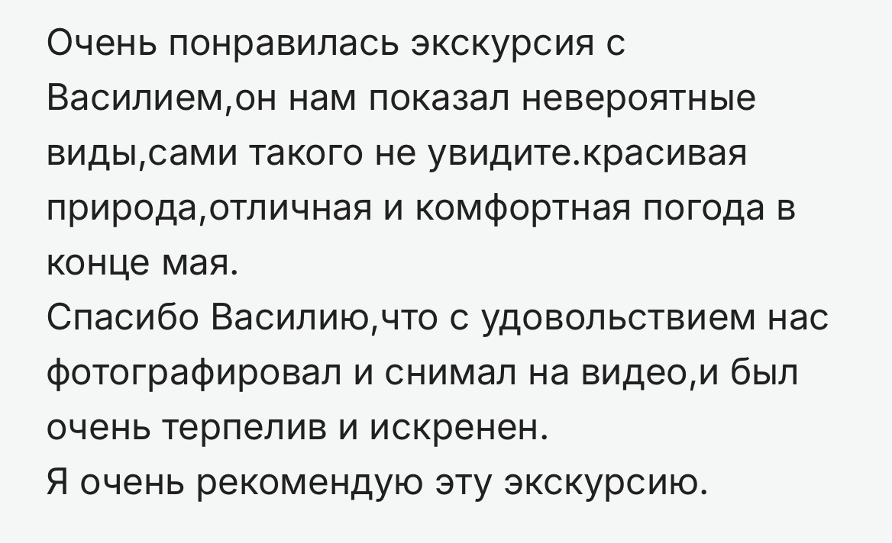
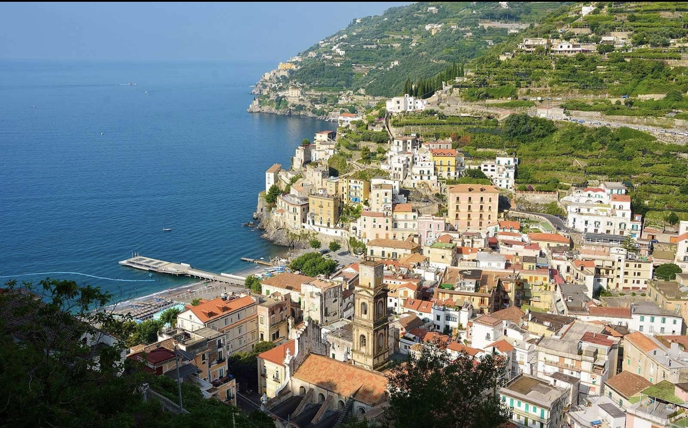
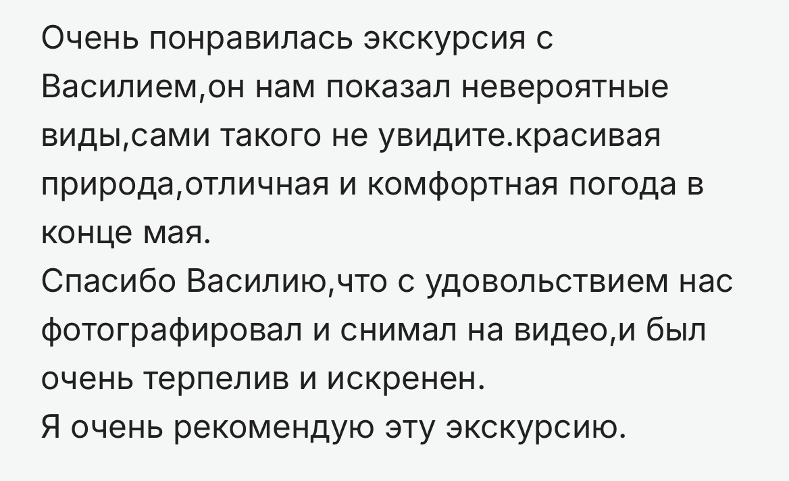

Фотогалерея


 






Местный гид и автор маршрутов по Амальфитанскому побережью
Меня зовут Василий Яковлев. Я живу на Амальфитанском побережье и провожу авторские экскурсии. Пешие маршруты, прогулки на байке и на корабле, гастрономические дегустации и фотосессии — всё с душой и вниманием к деталям. Я рассказываю истории этого края и помогаю вам увидеть его настоящим.

